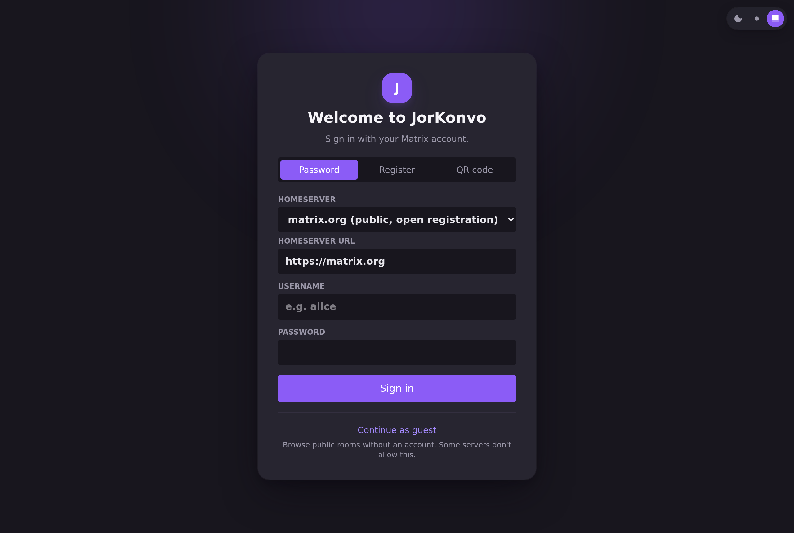

Spaces, channels, voice and video calls, end-to-end encryption — on Matrix, the open chat protocol. No single company owns the network: sign in with any server, or run your own.
Terek, szobák, hang- és videóhívások, végpontok közötti titkosítás — a Matrixon, a nyílt csevegési protokollon. A hálózatot nem egyetlen cég birtokolja: bármely szerverrel bejelentkezhetsz, vagy futtathatsz sajátot.

Familiar on the surface. Fully end-to-end encrypted where it counts.
Felületen ismerős. Ahol számít, végig titkosított.
Threads, reactions, polls, @mentions, edit & delete, forwarding, file and image sharing with link previews.
Szálak, reakciók, szavazások, @említések, szerkesztés/törlés, továbbítás, kép-/fájlmegosztás URL-előnézetekkel.
Matrix's standard encryption (rust-crypto), emoji device verification, and recovery-key encrypted backup.
A Matrix szabványos titkosítása (rust-crypto), emoji-alapú eszközellenőrzés, recovery key-vel titkosított mentés.
1:1 peer-to-peer calls, always-on voice channels, group calls, noise suppression and push-to-talk.
1:1 peer-to-peer hívások, állandó hangcsatornák, csoportos hívások, zajszűrés és push-to-talk.
Named, colored roles with permissions, slowmode, keyword automod, audit log, invite links and QR codes.
Nevesített, színezett szerepkörök jogosultságokkal, lassított mód, kulcsszavas automod, naplózás, meghívólinkek és QR-kódok.
No single JorKonvo server everyone has to use. Sign in anywhere on Matrix, or self-host your own homeserver.
Nincs egyetlen közös JorKonvo-szerver. Bejelentkezhetsz bárhova a Matrixon, vagy futtathatsz saját szervert.
One codebase: web, desktop (Windows/Linux/macOS) and Android, with iOS on the way. Multiple accounts at once.
Egy kódbázis: web, asztali (Windows/Linux/macOS) és Android, hamarosan iOS-szel. Több fiók egyszerre.
Matrix is an open, decentralized chat protocol — think of it like email, but for chat. JorKonvo doesn't run the one server everyone must use; the sign-in screen defaults to matrix.org, with matrix.tchncs.de offered as a second public option, and the server field is always freely editable. Whoever runs your homeserver is your actual data controller — see the privacy policy for exactly what they can and can't see.
A Matrix egy nyílt, decentralizált csevegési protokoll — olyasmi, mint az email, csak csevegéshez. A JorKonvo nem üzemeltet egyetlen kötelező szervert; a bejelentkező képernyő alapértelmezetten a matrix.org-ot ajánlja, a matrix.tchncs.de egy második nyilvános lehetőség, és a szerver-mező mindig szabadon szerkeszthető. Amelyik szervert használod, annak üzemeltetője a tényleges adatkezelőd — pontosan mit lát, azt az adatvédelmi tájékoztatóban írjuk le.
Early, actively developed releases. The web app always has the latest version — no install needed.
Korai, aktívan fejlesztett kiadások. A webapp mindig a legfrissebb verziót futtatja — telepítés nélkül.
Works today, always up to date
Már elérhető, mindig naprakész
v0.1.5 — prerelease
v0.1.5 — előzetes kiadás
Debian/Ubuntu (apt repo):
Debian/Ubuntu (apt repó):
curl -fsSL https://jorkonvo.com/apt/jorkonvo.gpg | sudo tee /usr/share/keyrings/jorkonvo.gpg >/dev/null echo "deb [signed-by=/usr/share/keyrings/jorkonvo.gpg] https://jorkonvo.com/apt stable main" | sudo tee /etc/apt/sources.list.d/jorkonvo.list sudo apt update && sudo apt install jor-konvo
Arch (AUR, once published):
Arch (AUR, hamarosan):
git clone https://aur.archlinux.org/jorkonvo-bin.git cd jorkonvo-bin && makepkg -si
All builds unsigned - GPG-signed SHA256SUMS on every release.
Minden build aláíratlan - de minden release mellett GPG-aláírt SHA256SUMS van.
v0.1.5 — prerelease
v0.1.5 — előzetes kiadás
Unsigned — Windows SmartScreen will warn ("More info" → "Run anyway"). winget/Chocolatey packages in progress.
Aláíratlan — a Windows SmartScreen figyelmeztetni fog ("További információ" → "Futtatás mindenképp"). winget/Chocolatey csomagok előkészítve.
v0.1.5 — prerelease; Play Store review pending
v0.1.5 — előzetes kiadás; Play Store elbírálás folyamatban
F-Droid (self-hosted repo):
F-Droid (saját repó):
Repo: https://jorkonvo.com/fdroid/repo
Not on the main F-Droid index (uses Google Firebase push).
Nincs a fő F-Droid indexben (Google Firebase push-t használ).
In testing — TestFlight
Tesztelés alatt — TestFlight
A public TestFlight invite link is coming once the build finishes Apple's processing.
Publikus TestFlight meghívó link hamarosan, amint Apple feldolgozza a build-et.
Open source, build it yourself
Nyílt forráskód, magad is lefordíthatod